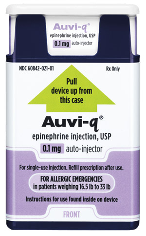
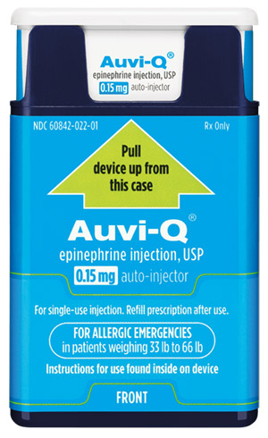
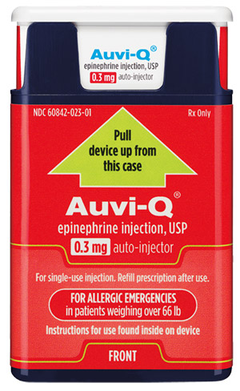

content
About Auvi Q
An epinephrine auto injector designed to go and grow with your patients.
-

AUVI-Q 0.1 mg For infants and toddlers28 weighing 16.5 lbs to 33 lbs.
-

AUVI-Q 0.15 mg For children28 weighing 33 lbs to 66 lbs.
-

AUVI-Q 0.3 mg For anyone28 weighing 66 lbs or more.
Auvi-Q Administration
Watch a simulated injection of AUVI-Q:
For infants and toddlers weighing 16.5 lbs-33 lbs
For children weighing 66 lbs or more. Injection process is the same for anyone weighing 33-66 lbs
If you inject a young child or infant with AUVI-Q, hold their leg firmly in place before and during the injection to prevent injuries.28 Ask your healthcare provider to show you how to properly hold the leg of a young child or infant during an injection.
Patients should seek emergency medical care immediately after use.
Do you prefer to read the instructions?Design that Makes a Difference
Emergency epinephrine is only effective when it’s close at hand and correctly injected.
That’s why AUVI-Q was designed to be easy to use and easy to carry. Features include:
-
Pocket-Sized
-
Voice Instructions
content
-
Auto-Restractable Needle
content
AUVI-Q® 0.1 MG WAS DESIGNED TO BE EASY TO USE DURING AN ALLERGIC EMERGENCY.
First and only FDA-approved epinephrine auto-injector specifically designed for infants and toddlers 16.5 lbs-33 lbs28
-
Step-By-Step Voice Instructions
Electronic voice guides caregivers through administration, whether trained or not28
-
Intuitive Design
Helps prevent user error and needle-related injuries29-31
-
Auto Auto-Restractable Needle
-
Needle is not visible before, during, or after injection28
-
Patients may not feel the injection when it occurs28
-
Shortest needle length available to deliver the dose at the right depth
~40% shorter than standard 0.15 mg epinephrine auto-injector needle length32
To minimize the risk of injection-related injury, instruct caregivers to hold a young child’s or infant’s leg firmly in place when administering AUVI-Q.28
-
Anaphylaxis Symptoms in Infants and Toddlers can be Difficult to Recognize 27,33
Watch this review for signs and symptoms
Visit our library to learn more from other opinion leaders.
Why Needle Size Matters
Watch this video which includes data from a study on needle size considerations in infants and toddlers weighing 16.5 lbs to 33 lbs.
Visit our library to learn more from other opinion leaders.
Made with Care
Every AUVI-Q is manufactured according to the highest standards.
How it's made:
- Manufactured on an intelligent, high-tech, 100% automated robotic production line
- Over 100 automated quality checks are performed on each AUVI-Q device
- Specially calibrated sensors and vision inspection systems help ensure each component is assembled with precision
- Identifiers are used to track individual components throughout the build
This process helps produce a consistent, high-quality product.
Developed by Patients, for Patients®
AUVI-Q was developed by twin brothers who grew up with life-threatening allergies and made it their mission to bring innovation to the epinephrine auto-injector market.
See first-hand accounts of how AUVI-Q affects the lives of those who use it by visiting the AUVI-Q patient site.
Is AUVI-Q a good fit for your practice?
How to E-Prescribe
Sign up for updates from AUVI-Q.